The state variable filter is a type of multiple-feedback filter circuit that can produce all three filter responses, Low Pass, High Pass and Band Pass simultaneously from the same single active filter design.
State variable filters use three (or more) operational amplifier circuits (the active element) cascaded together to produce the individual filter outputs but if required an additional summing amplifier can also be added to produce a fourth Notch filter output response as well.
State variable filters are second-order RC active filters consisting of two identical op-amp integrators with each one acting as a first-order, single-pole low pass filter, a summing amplifier around which we can set the filters gain and its damping feedback network. The output signals from all three op-amp stages are fed back to the input allowing us to define the state of the circuit.
One of the main advantages of a state variable filter design is that all three of the filters main parameters, Gain (A), corner frequency, ƒC and the filters Q can be adjusted or set independently without affecting the filters performance.
In fact if designed correctly, the -3dB corner frequency, ( ƒc ) point for both the low pass amplitude response and the high pass amplitude response should be identical to the center frequency point of the band pass stage. That is ƒLP(-3dB) equals ƒHP(-3dB) which equals ƒBP(center). Also the damping factor, ( ζ ) for the band pass filter response should be equal to 1/Q as Q will be set at -3dB, (0.7071).
Although the filter provides low pass (LP), high pass (HP) and band pass (BP) outputs the main application of this type of filter circuit is as a state variable band pass filter design with the center frequency set by the two RC integers.
While we have seen before that a band pass filters characteristics can be obtained by simply cascading together a low pass filter with a high pass filter, state variable band pass filters have the advantage that they can be tuned to be highly selective (high Q) offering high gains at the center frequency point.
There are several state variable filter designs available all based on the standard filter design with both inverting and non-inverting variations available. However, the basic filter design will be the same for both variations as shown in the following block diagram representation.
Then we can see from the basic block diagram above that the state variable filter has three possible outputs, VHP, VBP and VLP with one each from the three op-amps. A notch filter response can also be realized by the addition of a fourth op-amp.
With a constant input voltage, VIN the output from the summing amplifier produces a high pass response which also becomes the input of the first RC Integrator. The output from this integrator produces a band pass response which becomes the input of the second RC Integrator producing a low pass response at its output. As a result, separate transfer functions for each individual output with respect to the input voltage can be found.
The basic non-inverting state variable filter design is therefore given as:
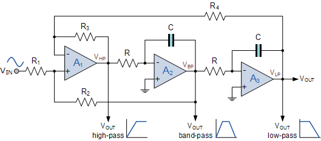
and the amplitude response of the three outputs from the state variable filter will look like:
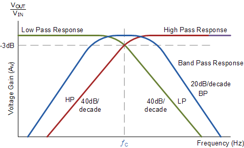
One of the main design elements of a state variable filter is its use of two op-amp integrators. As we saw in the Integrator tutorial, op-amp integrators use a frequency dependant impedance in the form of a capacitor within their feedback loop. As a capacitor is used the output voltage is proportional to the integral of the input voltage as shown.
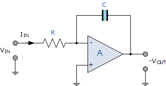
To simplify the math’s a little, this can also be re-written in the frequency domain as:
The output voltage Vout is a constant 1/RC times the integral of the input voltage Vin with respect to time. Integrators produce a phase lag with the minus sign ( – ) indicating a 180o phase shift because the input signal is connected directly to the inverting input terminal of the op-amp.
In the case of op-amp A2 above, its input signal is connected to the output of the proceeding op-amp, A1 so its input is given as VHP and its output as VBP. Then from above, the expression for op-amp, A2 can be written as:
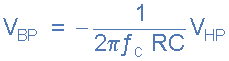
Then by rearranging this formula we can find the transfer function of the inverting integrator, A2
Exactly the same assumption can be made as above to find the transfer function for the other op-amp integrator, A3
So the two op-amp integrators, A2 and A3 are connected together in cascade, so the output from the first (VBP) becomes the input of the second. So we can see that the band pass response is created by integrating the high pass response and the low pass response is created by integrating the band pass response. Therefore the transfer function between VHP and VLP is given as:
Note that each integrator stage provides an inverted output but the summed output will be positive since they are inverting integrators. If exactly the same values for R and C are used so that the two circuits have the same integrator time constant, the two amplifier circuits can be regarded with one single integrator circuit having a corner frequency, ƒC.
As well as the two integrator circuits, the filter also has a differential summing amplifier providing a weighted summation of its inputs. The advantage here is that the inputs to the summing amplifier, A1 combines oscillatory feedback, damping and input signals to the filter as all three outputs are fed back to the summing inputs.
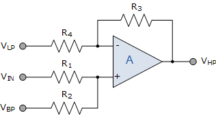
Operational amplifier, A1 is connected as an adder–subtracter circuit. That is it sums the input signal, VIN with the VBP output of op-amp A2 and the subtracts from it the VLP output of op-amp A3, thus:
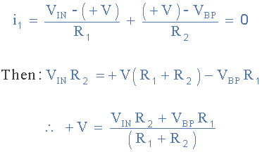
and
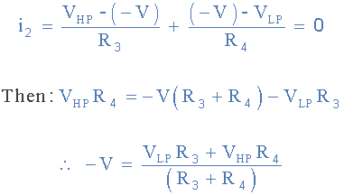
As the differential inputs, +V and -V of an operational amplifier are the same, that is: +V – -V, we can rearrange the two expressions above to find the transfer function for the output of A1, the high pass output.
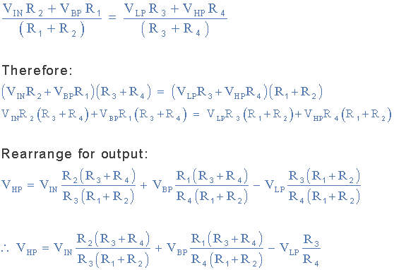
We know from above, that VBP and VLP are the outputs from the two integrators, A2 and A3 respectively. By substituting the integrator equations for A2 and A3 into the above equation, we get the transfer function of the state variable filter to be:
We said previously that a State Variable Filter produces three filter responses, Low Pass, High Pass and Band Pass and that the band pass response is that of a very narrow high Q filter and this is evident in the SVF’s transfer function above as it resembles that of a standard second-order response.
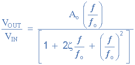
If we make both the integrators input resistors and feedback capacitors the same, then the state variable filters corner frequency can be easily tuned without affective its overall Q. Likewise, the value of Q can be varied without altering the corner frequency. Then the corner frequency is given as:
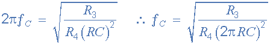
If we make feedback resistors R3 and R4 the same values, then the corner frequency of each filter output from the state variable filter simply becomes:
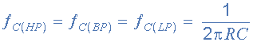
Then tuning of the state variable corner frequency is accomplished simply by varying either the tuning resistor, R or the capacitor, C.
State variable filters are characterised not only by their individual output responses, but also by the filters “Q”, Quality factor. Q relates to the “sharpness” of the band pass filters amplitude response curve and the higher the Q, the higher or sharper the output response resulting in a filter that is highly selective.
For a band pass filter, Q is defined as the center frequency divided by the filters -3dB bandwidth, that is Q = ƒc/BW. But Q can also be found from the denominator of the above transfer function as it is the reciprocal of the damping factor ( ζ ). Then Q is given as:
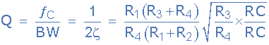
Again, if resistors R3 and R4 are equal and both integrator components R and C are equal, then the final square root expression would reduce to: √1 or simply 1 as the numerator and denominator cancel each other out.
Design a State Variable Filter which has a corner (natural undamped) frequency, ƒC of 1kHz and a quality factor, Q of 10. Assume both the frequency determining resistors and capacitors are equal. Determine the filters DC gain and draw the resulting circuit and Bode plot.
We said above that if both the resistor, R and the feedback capacitor, C of the two integrator circuits are the same values, that is R = R and C = C, the cut-off or corner frequency point for the filter is given simply as:
We can choose a value for either the resistor, or the capacitor to find the value of the other. If we assume a suitable value of 10nF for the capacitor then the value of the resistor will be:
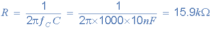
Giving C = 10nF and R = 15.9kΩ, or 16kΩ to the nearest preferred value.
The value of Q is given as 10. This relates to the filters damping coefficient as:
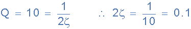
In the state variable transfer function above, the 2ζ part is replaced by the resistor combination giving:
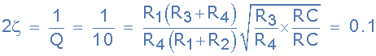
We know from above that R = 16kΩ and C = 10nF, but if we assume that the two feedback resistors, R3 and R4 are the same and equal to 10kΩ, then the above equation reduces down to:
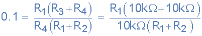
Assuming a suitable value for the input resistor, R1 of say 1kΩ, then we can find the value of R2 as follows:
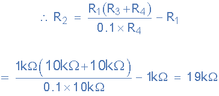
From the normalised transfer function above, the DC passband gain is defined as Ao and from the equivalent state variable filter transfer function this equates to:
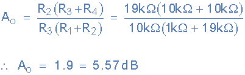
Therefore the DC voltage gain of the filter is calculated at 1.9, which basically equates to R2/R3. Also the maximum gain of the filter at ƒC can be calculated as: Ao x Q as follows.
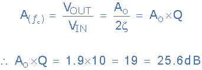
Then the design of the state variable filter circuit will be: R = 16kΩ, C = 10nF, R1 = 1kΩ, R2 = 19kΩ and R3 = R4 = 10kΩ as shown.
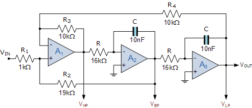
We can now plot the individual output response curves for the state variable filter circuit over a range of frequencies from 1Hz to 1MHz onto a Bode Plot as shown.
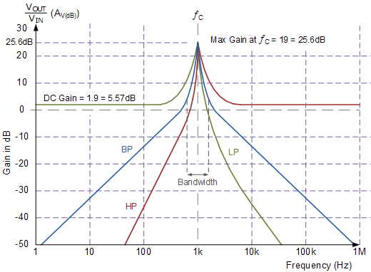
Then we can see from the filters response curves above, that the DC gain of the filter circuit is at 5.57dB which equates to an open loop voltage gain, Ao or 1.9 as calculated above. The response also shows that the output curves peaks at a maximum voltage gain of 25.6dB at the corner frequency due to the value of Q. As Q also relates the band pass filters center frequency to its bandwidth, the bandwidth of the filter will therefore be: ƒo/10 = 100Hz.
We have seen in this state variable filter tutorial that instead of an active filter producing one type of frequency response, we can use multiple-feedback techniques to produce all three filter responses, Low Pass, High Pass and Band Pass simultaneously from the same single active filter design.
But as well as the three basic filter responses, we can add an additional op-amp circuit onto the basic state variable filter design above to produce a fourth output response resembling that of a standard Notch Filter.
A notch filter filter is basically the opposite of a band pass filter, in that it rejects or stops a specific band of frequencies. Then a notch filter is also known as a “band stop filter”. To obtain the response of a notch filter from the basic state variable filter design, we have to sum together the high pass and low pass output responses using another op-amp summing amplifier, A4 as shown.
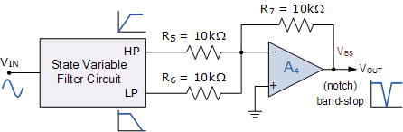
Here to keep things simple we have assumed that the two input resistors, R5 and R6 as well as the feedback resistor, R7 all have the same value of 10kΩ the same as for R3 and R4. This therefore gives the notch filter a gain of 1, unity.
The output response of the notch filter and bandpass filter are related with the center frequency of the bandpass response being equal to the point of zero response of the notch filter, and in this example will be 1kHz.
Also the bandwidth of the notch is determined by the circuits Q, exactly the same as for the pass band response. The downward peak is therefore equal to the center frequency divided by the -3dB bandwidth, that is the frequency difference between the -3dB points either side of the notch. Note that the quality factor Q has nothing to do with the actual depth of the notch.
This basic notch filter (band-stop) design has only two inputs applied to its summing amplifier, the low pass output, VLP and the high pass output, VHP. However, there are two more signals available for us to use from the basic state variable filter circuit, the band pass output, VBP and the input signal itself, VIN.
If one of these two signals is also used as an input to the notch filter summing amplifier along with the low pass and high pass signals, then the depth of the notch can be controlled.
Depending upon how you wanted to control the output from the notch filter section would depend upon which one of the two available signals you would use. If it was required that the output notch changes from a negative response to a positive response at the undamped natural frequency ƒo then the band pass output signal VBP would be used.
Likewise, if it was required that the output notch only varies in its downward negative depth, then the input signal, VIN would be used. If either one of these two additional signals was connected to the op-amp summing amplifier through a variable resistor then the depth and direction of the notch could be fully controlled. Consider the modified notch filter circuit below.
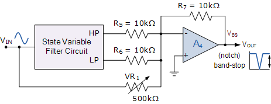
The State Variable Filter, (SVF) circuit is a second-order active RC filter design that use multiple feedback techniques to produce three different frequency response outputs, namely: Low Pass, High Pass and Band Pass from the same single filter. The advantage of the state variable filter over other basic filter designs is that the three main filter parameters, Gain, Q and ƒc can be adjusted independently.
We have also seen here that the filter is also easy to tune as the corner frequency, ƒc can be set and adjusted by varying either R or C without affecting the filters damping factor. However, at higher corner frequencies and larger damping factors the filter can become unstable so is best used with low Q, less than 10, and at low corner frequencies.
The basic state variable filter design uses three op-amp sections to produce its outputs, but we have also seen that with the addition of a fourth op-amp section summing the low pass and high pass sections together, a notch (band-stop) filter output response can also be achieved at the desired center frequency.